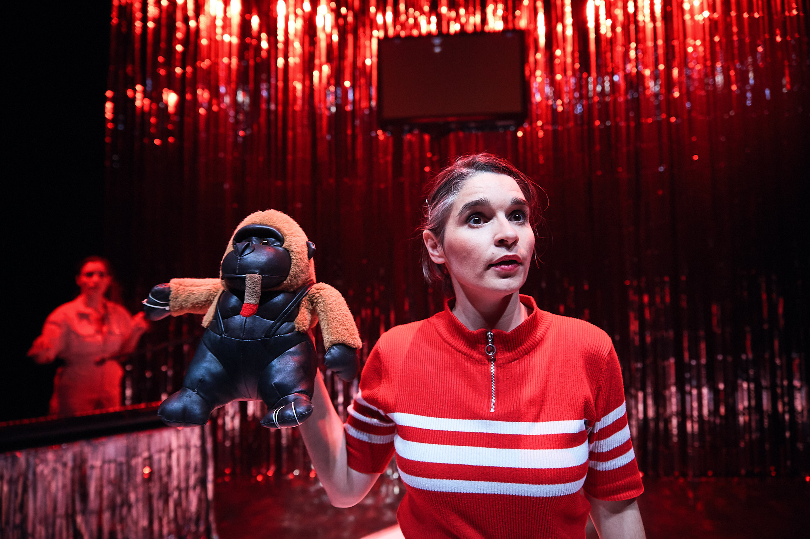
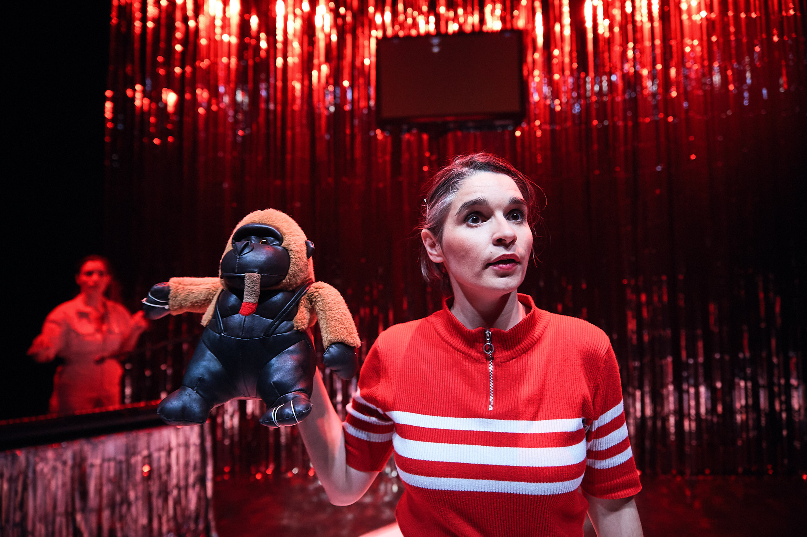

Fidelio, op. 72 Ludwig van Beethoven
Orquesta y Coro Nacionales de España
Equipo artístico
Dirección: David Afkham
Director asistente: Luis Toro Araya
Concepto escénico: Helena Pimenta
Asistente de dirección de escena: José Tomé
Iluminación: Miguel Ruz Velasco
Regidora: Cristina Berhó
Regidor de luces: Enrique Montesdeoca
Reparto:
Maximilian Schmitt (Florestan)
Eleanor Lyons (Leonore)
Peter Rose (Rocco)
Werner Van Mechelen (Pizarro)
Elena Sancho (Marzelline)
Roger Padullés (Jaquino)
Matthias Winckhler (Don Fernando)
Joaquín Notario (Narrador)
Fernando Aguilera (Prisionero 1)
Federico Gallar (Prisionero 2) *Miembros del CNE
Miguel Ángel García Cañamero:Director del CNE
Fotografía: Rafa Marín
Enlace web: link web


El futuro - manual de instrucciones
El pollo campero. Comidas para llevar
Citemor 2024. Residencia de creación. Coproducción. Site-specific
Equipo artístico
Creación: El pollo campero
Iluminación y espacio: Miguel Ruz Velasco
Diseño sonoro y DJ: Vanesa Rodrigo
Texto: Cris Celada
Imagen: Alejandro Andújar
Fotografía: Susana Paiva
Enlace web: link web
Enlace web: link web


Obra imposible
Los bárbaros
CCC Conde Duque
Equipo artístico
Creación: Los bárbaros
Dramaturgia y dirección: Javier Hernando y Miguel Rojo
En escena: Jesús Barranco y Rocío Bello
Iluminación: Miguel Ruz Velasco
Vestuario: Rocío Bello
Diseño sonoro: Pilar Calvo
Alumno en prácticas Máster ESADCYL: Julián Segovia
Fotografía: Javier Hernando
Producción: Los bárbaros
Enlace web: link web
Enlace web: link web


Pequeño cúmulo de abismos
Centro Dramático Nacional
Equipo artístico
Dirección: Cris Blanco
Dramaturgia: Rocío Bello, Cris Blanco, Óscar Bueno, Anto Rodríguez
Reparto: Oihana Altube, Rocío Bello, Cris Blanco e Íñigo Rodríguez-Claro
Escenografía: Pablo Chaves
Iluminación: Miguel Ruz Velasco
Vestuario: Jorge Dutor
Diseño sonoro: Carlos Parra
Vídeo: Marta Orozco
Ayudante de dirección: Marta Orozco
Ayudante de escenografía: Lia González Álvarez
Fotografía: Geraldine Leloutre
Tráiler: Macarena Díaz
Diseño de cartel: Equipo SOPA
Producción: Centro Dramático Nacional, Cris Blanco y Festival Grec de Barcelona
Enlace web: link web


El futuro
El pollo campero. Comidas para llevar
CITEMOR 2023. Residencia de creación. Coproducción. Site-specific
Equipo artístico
Idea y dirección: Cristina Celada
Texto: Cristina Celada em colaboração com Rosa Romero
En escena: Rosa Romero e Cristina Celada
Dirección técnica y diseño de iluminación: Miguel Ruz Velasco
Escenografia, vestuario y accesorios: Alejandro Andújar
Diseño sonoro: César Barco Manrique
Videocreación: Indi Costa
Técnica de sonido: Vanesa Rodrigo
Producción: Inés Lambisto
Imagen cartel: Eugenio Arrogante
Vídeo y teaser Andrés Pino - Conjunto Vacío
Con apoyo de: La Caldera e Instituto Ramon Llull
Fotografía: Susana Paiva
Vídeo y teaser Andrés Pino - Conjunto Vacío
Enlace web: link web
Enlace web: link web


La vida es sueño [el auto sacramental] de Calderón de la Barca
Compañía Nacional de Teatro Clásico
Equipo artístico
Dirección: Carlos Tuñón
Dramaturgia: Gon Ramos, Luis Sorolla, Carlos Tuñón y el equipo del Ensamble
Reparto: Ensamble. Ales Alcalde, Paula Amor, Mayte Barrera, Irene Doher, Pablo Gómez-Pando, Amanda H C, Antiel Jiménez, Daniel Jumillas, Caterina Muñoz, Rosel Murillo Lechuga, Alejandro Pau, Gon Ramos, Patricia Ruz, el Primo de Saint Tropez, Nacho Sánchez, Irene Serrano, Luz Soria y Luis Sorolla junto con el resto del Equipo artístico.
Espacio y plástica: Antiel Jiménez
Iluminación: Miguel Ruz Velasco
Vestuario: Paola de Diego
Sonido y música Nacho Bilbao
Movimiento: Patricia Ruz
Asesora verso: Irene Serrano
Asesor teórico: Sergio Adillo
Fotografía: Luz Soria
Producción: [Los números imaginarios]
Directora de producción: Rosel Murillo
Coordinadora artística / Ayudante de dirección: Mayte Barrera
Adjunta a la dirección: Paula Amor
Realización de vestuario: Marisa Sánchez
Prácticas en espacio y vestuario: Carmen Flores
Audiovisual: Ales Alcalde
Jefa técnica: Rocío Sánchez
Grabación de voces: Jumi
Técnico de sonido: Kevin Dornan
Gráfica: Rodrigo Arahuetes
Web: Quino Melguizo
Jefa de prensa y redes sociales: Amanda H C (Proyecto Duas)
Distribución: Caterina Muñoz (Caterina Producciones)
Residentes: Navel Art
Alumnas en Prácticas: Cristina Martínez y María Alejandra Rayo
Enlace web: link web


Obra infinita
Centro Dramático Nacional
Equipo artístico
Creación: Los bárbaros
Dramaturgia y dirección: Javier Hernando y Miguel Rojo
Reparto: Jesús Barranco, Rocío Bello, Cris Blanco, Elena H. Villalba, Diego Olivares, Alma P. Sokolíková y Macarena Sanz
Escenografía: Cecilia Molano
Iluminación: Miguel Ruz
Vestuario: Rocío Bello
Sonido: Felipe Lara
Ayudante de dirección: Gema R. Lirola
Ayudante de escenografía y vestuario: Almudena Bautista
Colaboración en vestuario: Carmen17 (diseños Curie y Jacaranda)
Fotografía: Luz Soria
Prácticas de Dramaturgia y Dirección: Eduardo Miura (Universidad Antonio de Nebrija)
Prácticas de Interpretación: Tomás Chazarra (RESAD)
Video: Bárbara Sánchez Palomero
Diseño de cartel: Equipo SOPA
Producción: Centro Dramático Nacional
Enlace web: link web


Obra inacabada
Los bárbaros
Teatro de la Abadía
Equipo artístico
Idea: Javier Hernando & Miguel Rojo
Creación: Rocío Bello, Javier Hernando, El primo de Saint Tropez, Miguel Rojo & Miguel Ruz
Iluminación: Miguel Ruz
Diseño de vestuario: Rocío Bello
Espacio sonoro: Pilar Calvo
Producción: Los Bárbaros
En coproducción con: Teatro de La Abadía


Las explicaciones
Los bárbaros
CCC Conde Duque
Equipo artístico
Un proyecto de: Javier Hernando & Miguel Rojo
Creación: Rocío Bello, Elena H. Villalba, Javier Hernando, & Miguel Rojo
En escena: Rocío Bello & Elena H. Villalba
Iluminación: Miguel Ruz
Escenografía: Javier Hernando & Miguel Rojo
Realización película: Visual Creative Producción Audiovisual
Director de fotografía y montaje: Pablo García Sanz
Sonido directo y mezcla: Miguel Sánchez González
Ayudante de cámara: Laura G. Serrano
Auxiliar de cámara y etalonaje: Héctor Martínez Cabrera
Producción: Los Bárbaros
Coproducción: Centro de Cultura Contemporánea Conde Duque
Agradecimientos: Carmen Herráez, Enrique Hernando


Terceiro Acto
Centro Dramático Gallego
Equipo artístico
Texto: Andrea Jiménez e Noemi Rodríguez, a partir de improvisacións co elenco
Dirección e dramaturxia: Andrea Jiménez e Noemi Rodríguez
Escenografía: Marta Pazos
Vestiario: Yaiza Pinillos
Iluminación: Miguel Ruz Velasco
Espazo sonoro: Hugo Torres
Coreografía: Amaya Galeote
Asistencia de dirección: Laura Míguez
Asistencia de escenografía: Carmen Triñanes
Asistencia de produción: Xandre Vázquez
Realizacións
Escenografía e utilería: Equipo técnico do CDG
Vestiario: Equipo técnico do CDG
Máscaras: Beatriz Nieto
Fotografías e vídeos: Miramemira
Deseño gráfico: Trisquelia
Coordinación e corrección de textos: Rosa Moledo


Silencio
CCC Conde Duque
Equipo artístico
Dirección: Andrea Díaz Reboredo
Mirada externa: Xavier Bobés Solà
Intérpretes: Miriam Garlo y Andrea Díaz
Espacio sonoro: Dani León
Diseño de iluminación: Miguel Ruz y Andrea Díaz
Vestuario: CajaNegra TAM
Universos objetuales: Pablo y Andrea Reboredo(s)
Asistente de producción: Anna Domingueo Enrich
Asistente de movimiento: Alba González Herrera
Información adicional
Género: Teatro visual y de objetos
Edad recomendada: Adultos y mayores de 11 años
Duración: 1 h
Idioma: Español y LSE


Mi gran noche
Teatro Fernán Gómez
Equipo artístico
Texto: Noemi Rodríguez
Dirección: Andrea Jiménez
Interpretación: Noemi Rodríguez, Darlene Rodríguez
Escenografía: Monica Borromello
Vestuario: Paola de Diego, Sigrid Blanco, Candela Ibañez
Vídeo: Ro Gotelé
Coreografía: Amaya Galeote
Iluminación: Miguel Ruz
Ayudante de dirección: Macarena Sanz
Fotografía: Danilo Moroni
Asesoría dramatúrgica: Eva Redondo Llorente
Prensa: María Díaz
Producción: Teatro En Vilo
Distribución: Proversus
Premios
Premio del Público en la Mostra Internacional de Teatro de Ribadavia


 


La Distancia
Centro Dramático Nacional
Equipo artístico
Texto: Pau Miró, Andrea Jiménez, Noemi Rodríguez y Juan Mayorga
Dirección: Andrea Jiménez y Noemi Rodríguez
Reparto
Jesús Barranco, Pablo Gallego Boutou, Alicia Rodríguez y Macarena Sanz ("La distancia" según Pau Miró)
Julia de Castro, Pablo Gallego Boutou, Juan Paños, Alicia Rodríguez, Noemi Rodríguez y Macarena Sanz ("La distancia" según Andrea Jiménez y Noemi Rodríguez)
Jesús Barranco y Julia de Castro ("La distancia" según Juan Mayorga)
Escenografía: Monica Boromello
Iluminación: Miguel Ruz Velasco
Vestuario: Guadalupe Valero
Videoescena: Álvaro Luna
Espacio sonoro: Sandra Vicente
Coreografía: Amaya Galeote
Ayudante de dirección: Pablo Gallego Boutou
Fotografía: Barbara Sánchez Palomero
Producción: Centro Dramático Nacional


Clic. Cuando todo cambia
Teatro Calderón de Valladolid
Equipo artístico
Producción: Fran Ávila y Teatro Calderón
Producción delegada: Henar Hernández
Texto: Itziar Pascual, Amaranta Osorio
Dirección de escena, movimiento, concepto espacial: Alberto Velasco
Escenografía y utilería lumínica: Miguel Delgado
Vestuario: Sara Sánchez de la Morena
Ayudante de dirección: Álvaro Caboalles
Dirección artística de montaje y creación de la película: Herminio Cardiel
Dirección actores película: Alberto Velasco
Director de fotografía película: Álvaro Sanz
Sonido película: Pablo Grial, Carlos Barcenilla
Gaffer película: José Luis Medina
Eléctricos película: Cristina Vielba y José Crespo
Composición tema musical: Monterrosa
Actores: Javier Cascón, Alicia Vermell, Inés González
Actores video: Marta Ruiz de Viñaspre y Roberto Enríquez
Fotografía y diseño de cartel: Ana Pizarro
Fotografías: Vadeocio
Año de estreno: 2020